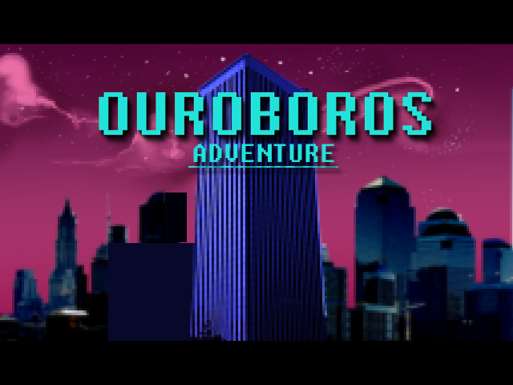

Proyectos
En esta sección se encuentran algunos de los proyectos que he ido realizando a lo largo de mi vida.
Novelas
-
El Límite de Ares:
- Episodio 1: Olimpiadas (2014)
- Episodio 2 (Próximamente)
Videojuegos
-
Zrukall (2016) [Unity, C#]:
Este juego fue una aventura conversacional que hice como proyecto final para una asignatura del Máster de Ingeniería Informática que hice. Cansado de tener que hacerme los gráficos, opté por hacer un juego que no los necesitara, aunque la asignatura fuera de Unity.
- Versión 0.2 (Windows x64)
- Repositorio en GitHub
-
Boxoban (2015) [Unity, C#]:
Este juego es una versión del clásico Sokoban como proyecto final para una asignatura del Máster de Ingeniería Informática que hice. Aprovechando que tenía unas nociones básicas de pixel art, hice el apartado gráfico del juego, además de programarlo.
- Versión 1.0 (Windows x64)
- Repositorio en GitHub
-
Tank Commander (2015) [C, ARM]:
Este juego fue el proyecto final para la asignatura "Sistemas Empotrados Distribuidos" del Máster de Ingeniería Informática que hice. La idea era hacer un juego para dos jugadores, donde dos tanques luchaban entre sí, que se pudiera ejecutar en la placa Embest S3CEV40.
- Repositorio en GitHub
-
Gorkinovich Amateur Games Collection (2014) [SFML, C++]:
Atravesaba yo una mala época en mi vida, cuando decidí portar a C++ todos los juegos que tenía hechos entonces. Como muchos de ellos eran para MS-DOS o estaban hechos con lenguajes obsoletos, quería actualizarlos a un lenguaje más estable como C++. Me dio la oportunidad para darle un lavado de cara a muchos de dichos juegos.
- Versión 1.0 (Windows x86)
(Necesita el MSVC++ 2015 Redistributable) - Repositorio en GitHub
- Versión 1.0 (Windows x86)
-
Ouroboros Adventure (2012) [AGS]:
Este juego fue el resultado de participar en la Global Game Jam de 2012. El año anterior participé, pero se nos fue de las manos la "creatividad". Por lo que en 2012 llegué con la intención fija de hacer una aventura gráfica usando el Adventure Game Studio. Tuvimos suerte de que se apuntaran un par de grafistas y poder así hacer algo bastante apañado a pesar de tener sólo 48 horas de límite.
 -
Defenders of Mankind (2011) [Ogre3D, C++]:
Este juego fue el proyecto final del Máster de Videojuegos que hice. La idea era hacer un shooter 2D de naves espaciales y eso fue lo que logramos.
- Juegos Antiguos
Dependencias: Microsoft Visual C++ Redistributables
- Descargas del Visual Studio.
- Descargas antiguas del Visual Studio.
- Microsoft Visual C++ 2015, 2017, 2019, 2022: x86, x64, ARM64.
- Microsoft Visual C++ 2013: x86, x64.
- Microsoft Visual C++ 2012: x86, x64.
- Microsoft Visual C++ 2010: x86, x64.
- Microsoft Visual C++ 2008: x86, x64.